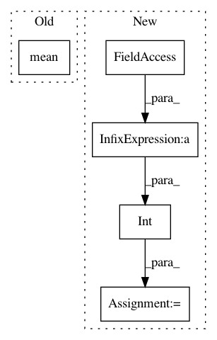

40fa8860f0ae704f551ec46cc12c9f9b8e971730,art/attacks/evasion/shadow_attack.py,ShadowAttack,generate,#ShadowAttack#Any#Any#,101
Before Change
for _ in range(self.nb_steps):
print(_, np.mean(perturbation))
gradients_ce = self.estimator.loss_gradient(x=x, y=y)
After Change
x_adv = np.zeros_like(x)
// Compute perturbation with implicit batching
for i_batch in range(int(np.ceil(x.shape[0] / self.batch_size))):
batch_index_1, batch_index_2 = i_batch * self.batch_size, (i_batch + 1) * self.batch_size
x_batch = x[batch_index_1:batch_index_2]
y_batch = y[batch_index_1:batch_index_2]
perturbation = (
np.random.uniform(
low=self.estimator.clip_values[0], high=self.estimator.clip_values[1], size=x_batch.shape
)
- (self.estimator.clip_values[1] - self.estimator.clip_values[0]) / 2
)
for _ in range(self.nb_steps):
gradients_ce = self.estimator.loss_gradient(x=x_batch, y=y_batch)
gradients = gradients_ce - self._get_regularisation_loss_gradients(perturbation)
perturbation += self.learning_rate * gradients
x_p = x_batch + perturbation
x_p = np.clip(x_p, a_min=self.estimator.clip_values[0], a_max=self.estimator.clip_values[1])
perturbation = x_p - x
x_adv[batch_index_1:batch_index_2] = x + perturbation
return x_adv
def _get_regularisation_loss_gradients(self, perturbation):
In pattern: SUPERPATTERN
Frequency: 3
Non-data size: 5
Instances
Project Name: IBM/adversarial-robustness-toolbox
Commit Name: 40fa8860f0ae704f551ec46cc12c9f9b8e971730
Time: 2020-05-19
Author: beat.buesser@ie.ibm.com
File Name: art/attacks/evasion/shadow_attack.py
Class Name: ShadowAttack
Method Name: generate
Project Name: tyarkoni/pliers
Commit Name: 31cf37cb6c29afe8d6598bd9ca2d7e5ed3df1fad
Time: 2017-03-03
Author: quinten.mcnamara@gmail.com
File Name: pliers/stimuli/audio.py
Class Name: AudioStim
Method Name: __init__
Project Name: ncullen93/torchsample
Commit Name: 1344dee35dbacaaaaabdaf452f0dfe74e3ab50e4
Time: 2017-04-19
Author: ncullen@modv-vlan533.0288.apn.wlan.wireless-pennnet.upenn.edu
File Name: torchsample/modules/super_module.py
Class Name: SuperModule
Method Name: evaluate_loader